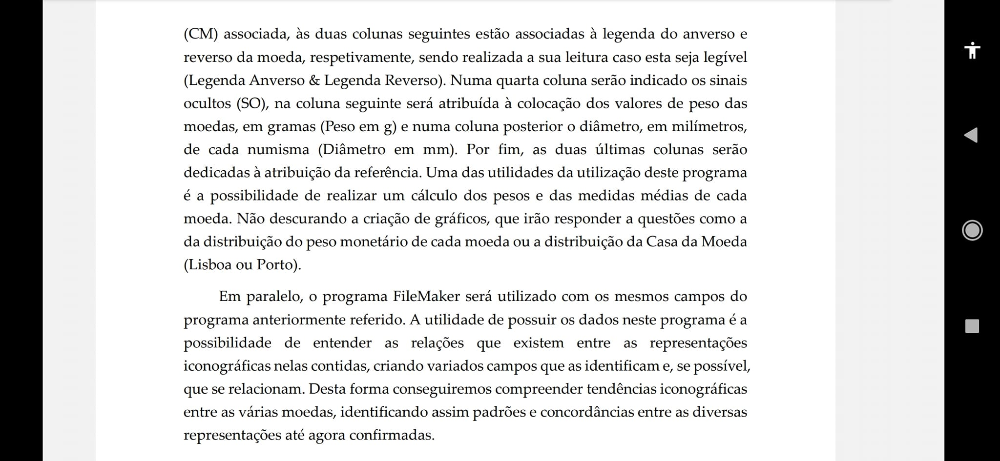

Parece que finalmente irão aparecer as tão esperadas teses sobre a moeda medieval portuguesa. E isso é um assunto que me alegra, independentemente da génese das mesmas se dar, mais por espírito reaccionário, do que por elevação gnoseológica.
No meio académico pós-moderno as grandes obras têm sempre uma série de apêndices que vão sendo publicados sucessivamente e creditando os autores. Dou os meus parabéns ao futuro mestre da numária de Avis e espero que venham daí bons resultados sobre os reais de três libras e meia.
Como tenho uma noção muito minha de elevação, não vou fazer ao João Teixeira Moreira o que me fizeram a mim, desejando-lhe sinceramente o melhor trabalho possível. Nesse sentido, deixo aqui o aviso público acerca da metodologia que anunciou e que me parece será bastante criticada por todos aqueles que sabotaram a minha metodologia, ao menos se forem coerentes. Passo a explicar.
Essa sistematização dos sinais ocultos pelo método da taxonomia numérica (era assim que lhe chamava Mário Gomes Marques) talvez possa dar frutos. Não sei quais, mas admito que os dê. De qualquer modo, os maiores frutos virão certamente de diferenças nas letras. Não basta distinguir "E's" góticos, é preciso chegar ao punção e criar tipos com base na morfologia dos punções. Encontrar os punções mais típicos em cada alfabeto, para os usar como marcadores, e criar muitas mais colunas do que as que estão mencionadas no projecto publicado.
Gostei de ler a ideia da distinção dos castelos e das coroas baseada na bibliografia indicada. Tive tanto trabalho a criar tipos de castelos e a numerá-los. Faria sentido, digo eu, partir dos meus números e dar-lhes nomes. Mas compreendo a opção. Ora, convirá introduzir também essas características em colunas criadas na tabela de Excel e relacioná-las com as demais, facto que não vem mencionado na metodologia indicada no projecto. É que, feito o trabalho todo, verificar-se-á a final que os elementos nos pedúnculos da coroa chegariam para fazer a distinção. Nos reais de três libras e meia do Porto, bastaria até a letra monetária, como aliás eu já publiquei algures. Ou seja, em Lisboa está tudo bem organizado macro-tipologicamente, ao passo que no Porto terá que se alterar a catalogação para dar primazia à coroa.
Naturalmente que num achado dessa magnitude estarão certamente moedas inéditas e até possíveis tipologias inéditas, pelo que acerca disso o meu espírito é da mais sincera expectativa.
Reparei, pela organização do trabalho e das ideias do João Teixeira Moreira, que usou o meu livro para perceber estas moedas. E isso enche-me de orgulho substantivo, pelo que lhe agradeço o que evidenciou no texto e, sobretudo, na organização das ideias. Mas lembro-lhe que, quando escrevi esse livro, nunca pensei atingir um nível verdadeiramente académico. Expressei isso na introdução do livro e sempre o vi como um contributo para que, um dia, um académico pudesse pegar nestas moedas e dar-lhes a forma que a mim não me competia. O passar do tempo e a roda da fortuna ditaram que os trabalhos que faço hoje já almejem esse nível. Mas isso são outras reacções...
De qualquer modo, interessa-me salientar que esse livro não foi a minha tese de doutoramento, conforme menciona o João Teixeira Moreira. Nem eu nunca seria capaz de fazer uma tese de doutoramento, porque isso implicaria obedecer a regras formais com as quais não me identifico. E, não tendo que vender a alma ao diabo, prefiro beneficiar de liberdade científica e criativa.
Custou-me um bocado escrever este texto e, sobretudo, pensar sobre este tema. Se há numária que actualmente não me interessa, é a de D. João I. Mas como sei que estes meus textos de algum modo hão-de chegar ao destino e que a publicação destas ideias certamente contribuirá para a melhoria da tese do João Teixeira Moreira, acabei por fazer o esforço de pensar com alguma calma neste assunto. Espero que esta tese de mestrado não cumpra nenhuma função programática e seja de facto motivada por uma vontade do meio académico em conhecer melhor as moedas medievais. Se assim for, desde já está de parabéns o João Teixeira Moreira. Desejo-lhe a maior das sortes!